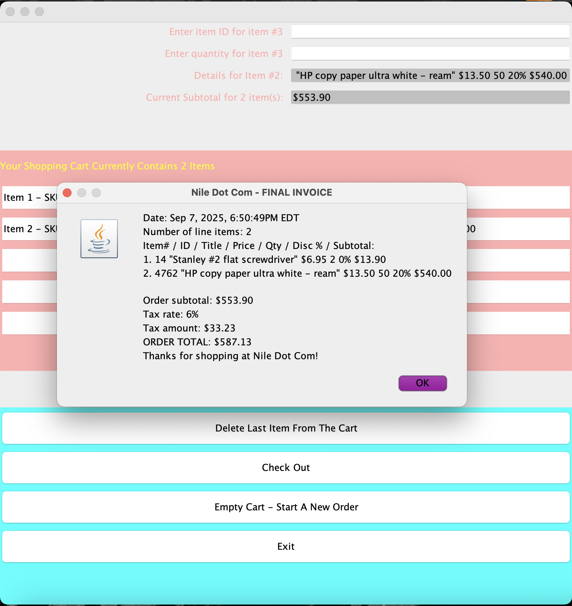
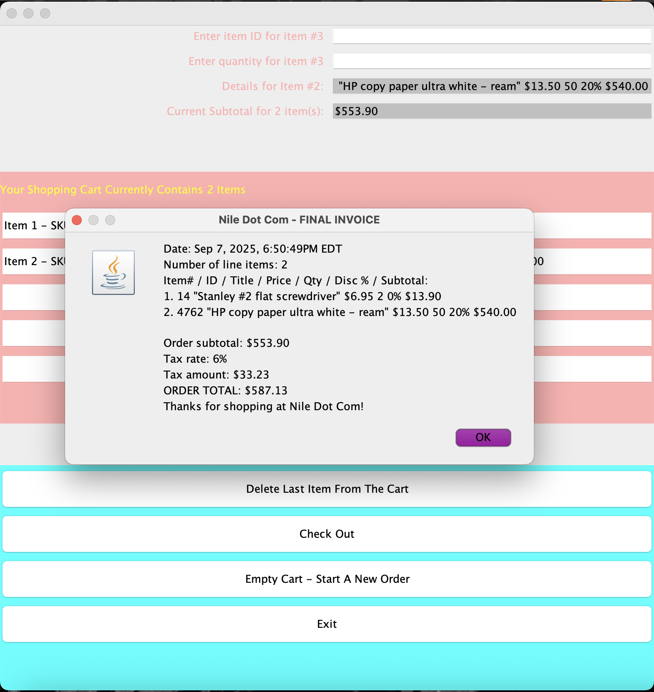

Java GUI app that simulates an online store where users can search for items, add them to a cart, check out, and get an invoice. The program reads inventory from a CSV file, updates totals with tax/discounts, and logs each transaction
in a separate file. The program manages inventory by reading item data (IDs, descriptions, prices, quantities) from a CSV file.
 
